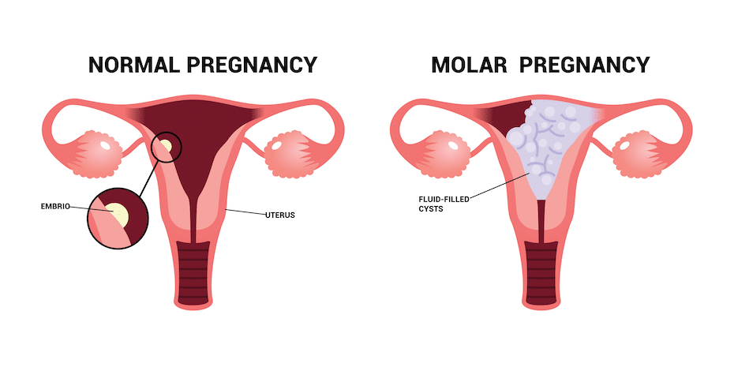
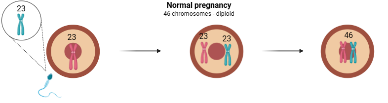
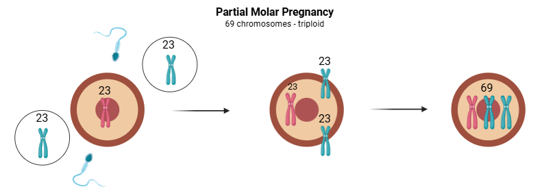
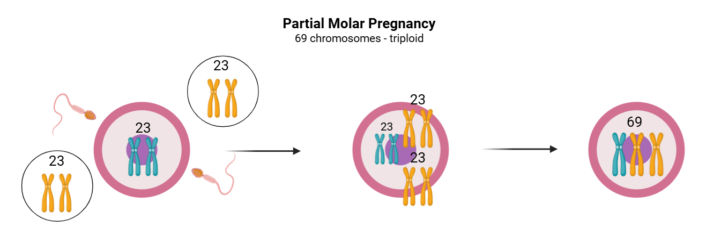
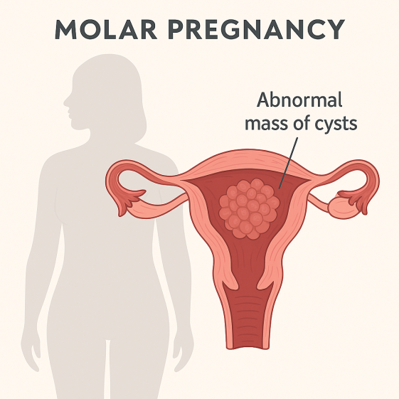
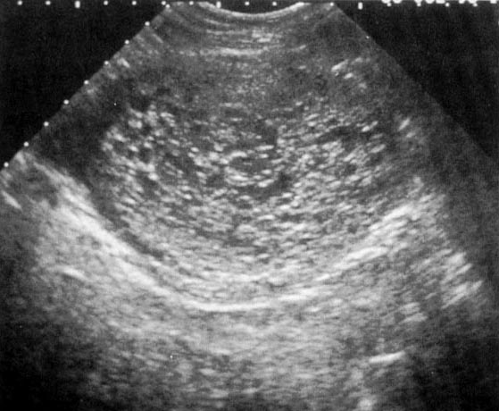
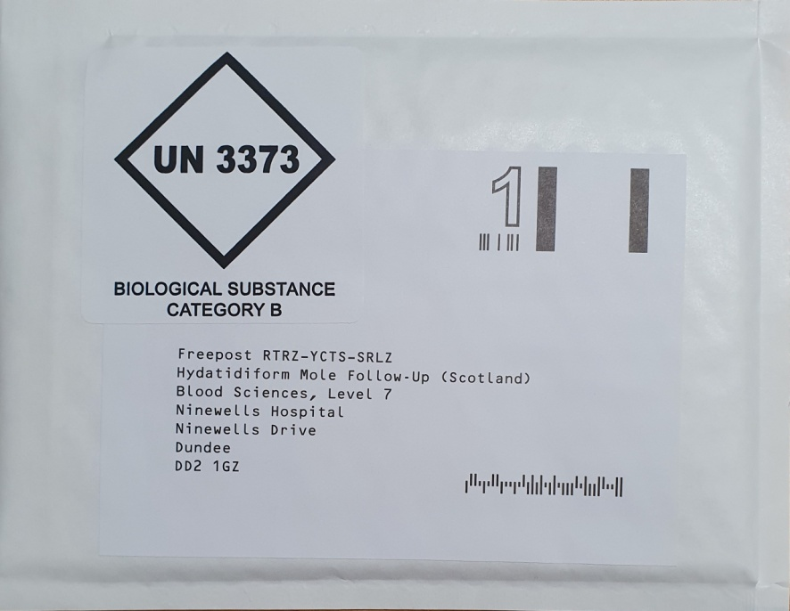
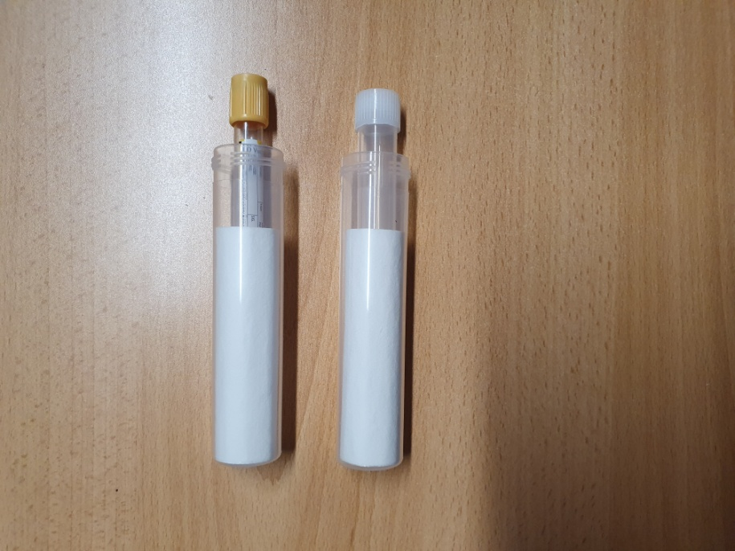
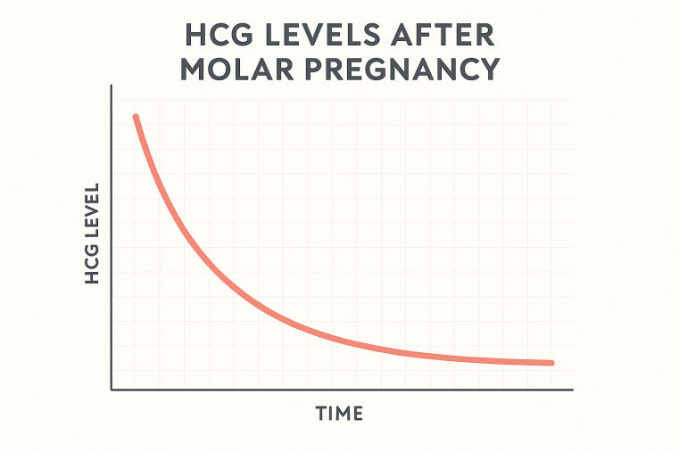

Service Hours
Monday – Friday, 8:00am – 5:00pm. The service is closed on public holidays and cannot receive samples on those dates.
About Molar Pregnancy
Molar pregnancies are uncommon, occurring in around 1 in every 600 pregnancies in the UK. They develop when abnormal cells grow within the womb instead of a baby. This happens because of an error at the point of conception, when the egg and sperm combine, leading to the rapid growth of abnormal cells that cannot develop into a normal placenta or foetus.

There are two types of molar pregnancy: complete and partial. These differ in their genetic composition, how they develop, and in the likelihood that further treatment may be required.



Complete Molar Pregnancy
In a complete molar pregnancy, all of the genetic material comes from the father. This happens because the egg loses the mother's genetic material either at conception or while developing in the ovary. A complete molar pregnancy forms a mass of rapidly growing placental cells, but no baby develops. After the molar tissue is removed, around 10–15% of women may need further treatment.
Partial Molar Pregnancy
In a partial molar pregnancy, genetic material is present from both parents, but there is an imbalance, two sets of chromosomes from the father. An early ultrasound may show a foetus, but it is always abnormal and cannot survive.
Symptoms and Diagnosis
During the early weeks, symptoms can include nausea, vaginal bleeding, and abdominal pain — though these can also occur in normal pregnancies. Most complete molar pregnancies are diagnosed at the first ultrasound scan, which shows a mass of abnormal tissue without a foetus.


Treatment (Initial)
Once confirmed, the abnormal tissue is removed from the uterus — usually with a procedure called a dilatation and curettage (D&C), or sometimes with medication. After removal, more than 99% of women do not need any further treatment, as remaining abnormal cells usually disappear naturally.
All women are then enrolled in a follow-up programme using regular hCG tests to confirm that the condition is resolving and to identify early if further treatment is needed.
🎬 Falling — Patient stories of monitoring molar pregnancy
This short film presents three women's experiences of molar pregnancy. It captures the shock and confusion that can accompany diagnosis of this little-known condition, feelings of being in 'limbo' between pregnancy and disease, and the exhaustion of regular monitoring. It ends with hope as they move beyond the condition, with close to 100% of UK patients cured.
Based on research by Dr Emily Ross. Citation: Sheffield Trophoblastic Disease Centre
Follow-Up After a Molar Pregnancy
Once registered with the follow-up centre, your hCG levels will be checked every two weeks to ensure they are falling as expected. Monitoring starts with both blood and urine tests.
You will be sent a testing kit by post, which includes everything you need and clear instructions. Results are usually available within one week of samples being received.


Length of Follow-Up
| Type | Follow-Up Duration |
|---|---|
| Complete molar pregnancy | If hCG normalises within 8 weeks: 6 months from evacuation date. If slower: 6 months from the first normal hCG result. |
| Partial molar pregnancy | Blood and urine every 2 weeks until hCG is normal, then one further urine test after 4 weeks. |
Important: Contraception during follow-up
During follow-up, it is important to avoid becoming pregnant, as a new pregnancy makes it difficult to confirm the condition has fully resolved. Your healthcare team will advise when it is safe to try for another pregnancy.
Further Treatment After a Molar Pregnancy
Most women do not need any further treatment. However, around 15% of women with a complete molar pregnancy and about 1% with a partial molar pregnancy will need additional treatment.
Further treatment may be required if hCG levels stop falling or begin to rise, or if there is heavy vaginal bleeding. Treatment options are:
- A repeat surgical procedure (D&C), or
- Chemotherapy, the most commonly used treatment, as it is highly effective.
Cure rate: 100%
If chemotherapy is needed, the cure rate is 100%. Treatment is carefully chosen to be as effective as possible while minimising side effects. NHS Scotland funds free travel and accommodation for you and one accompanying person if admission to Charing Cross Hospital is required.
Chemotherapy Treatment
Most women who need treatment are in the low-risk group. The most common treatment is Methotrexate combined with Folinic Acid. This treatment is usually well tolerated and does not cause hair loss or sickness.
Treatment is given in cycles:
- Methotrexate injections on days 1, 3, 5, and 7
- Folinic Acid tablets on days 2, 4, 6, and 8 (to reduce side effects)
- A rest week with no treatment
- The next cycle begins if needed
Possible side effects include sore eyes, a sore mouth, tummy discomfort, and tiredness. Treatment usually lasts 3–5 months.

Post-Chemotherapy Follow-Up
After treatment, patients return to clinic 6 weeks later for a review. All patients continue lifelong hCG marker follow-up.
| Period | Monitoring Schedule |
|---|---|
| Year 1, weeks 1–26 | Two-weekly serum + urine |
| Year 1, weeks 27–52 | Two-weekly urine |
| Year 2 | Monthly urine |
| Year 3 | Every 2 months |
| Year 4 | Every 3 months |
| Year 5 | Every 4 months |
| Year 6 onwards | Every 6 months (lifelong) |
Fertility After Chemotherapy
Most women maintain fertility and periods usually return 2–6 months after treatment. There is no increased risk of foetal abnormalities. The risk of another molar pregnancy is approximately 1 in 100, and pregnancy should be avoided for 12 months after treatment. 83% of women who wish to conceive achieve at least one live birth.
Types of Gestational Trophoblastic Tumours
Choriocarcinoma
Choriocarcinoma is a very rare cancer that develops from placental tissue, with only 10–20 cases a year in the UK. Treatment at Charing Cross Hospital typically involves EMA-CO chemotherapy given weekly, over 4–5 months. The cure rate is over 95%.
Placental Site Trophoblastic Tumour (PSTT)
PSTT is an extremely rare cancer (fewer than 5 cases per year in the UK) that develops months or years after pregnancy. It is highly curable, though treatment can be more complex. All patients are cared for at Charing Cross Hospital.
Counselling Services
Our counselling service offers professional, confidential, and non-judgemental support for women and families affected by molar pregnancy and related conditions. The service is person-centred and client-led — support is tailored to your individual needs.
Counselling is free of charge
The number of sessions depends entirely on the individual and what feels helpful. If more specialised or longer-term support is needed, you will be referred to an appropriate professional.
What We Offer
- Emotional and psychological support
- A safe space to talk and be heard
- Practical information and guidance
- Access to resources and toolkits
- Support with coping strategies and adjustment
- Ongoing or reconnectable support when needed
To access counselling, contact us at: [email protected]
Helpful Content and Websites
NHS Inform Scotland
Reliable patient-focused information about molar pregnancy, diagnosis, treatment and follow-up.
Visit →NHS.uk
Patient information about molar pregnancy from NHS England.
Visit →Macmillan Cancer Support
Practical, medical, emotional and financial advice. Support line: 0808 808 0000.
Visit →MyMolarPregnancy.com
Clear information, personal experiences, and reassurance — written in plain language.
Visit →The Molar Pregnancy Website
A patient-created support resource first launched in 2007, updated 2017.
Visit →Miscarriage Association
Telephone support for you and your family: 01924 200799.
Visit →Sheffield Trophoblastic Disease Centre
Specialist UK centre for GTD management.
Visit →ISSTD
International Society for the Study of Trophoblastic Diseases.
Visit →Frequently Asked Questions
1. What are complete and partial molar pregnancies?
A molar pregnancy happens when an abnormality occurs at the time the egg is fertilised. The pregnancy tissue grows, and tests show a positive result, but it cannot develop into a baby. There are two types: complete and partial.
Complete: The mother's genetic material is lost from the egg. Only the father's genetic material is present, so no embryo forms. Placental tissue grows abnormally and forms many cysts.
Partial: The egg keeps the mother's genetic material but is fertilised by two sperm, giving three sets of chromosomes. A foetus may begin to develop but cannot grow normally or survive.
2. What are the symptoms of a molar pregnancy?
Symptoms often appear in the second or third month. Common signs include:
- Vaginal bleeding or brown-red discharge
- More severe nausea or vomiting than usual
If untreated, it can occasionally cause a uterus that grows faster than expected, high blood pressure, or overactive thyroid symptoms. Most molar pregnancies are diagnosed early.
3. How is a molar pregnancy diagnosed?
Most are identified during an ultrasound scan that looks abnormal. After tissue is removed, it is sent to a laboratory to confirm the diagnosis. Sometimes a molar pregnancy is discovered unexpectedly when tissue from a miscarriage or termination is examined.
4. How is a molar pregnancy treated?
The usual treatment is an evacuation procedure (D&C) where the cervix is gently opened and tissue removed using suction. In some cases of partial molar pregnancy, medication may be used instead.
5. Why is correct diagnosis important?
A correct diagnosis is essential because molar pregnancies can sometimes develop into persistent trophoblastic disease (PTD), which may require chemotherapy. After a complete molar pregnancy, about 1 in 10 people need further treatment; after a partial molar, the risk is about 1 in 100. Because it's not possible to know immediately who will need extra treatment, everyone in the UK is enrolled in a follow-up programme.
6. How does the surveillance programme work?
In the UK, everyone with a molar pregnancy is enrolled in a follow-up programme monitoring the pregnancy hormone hCG. Your gynaecology team will register you with one of three national centres:
- Ninewells Hospital, Dundee
- Charing Cross Hospital, London
- Weston Park Hospital, Sheffield
You'll send regular blood or urine samples every two weeks. Falling hCG levels confirm the molar tissue is settling.
7. What is hCG and how is it measured?
hCG stands for human Chorionic Gonadotrophin — the hormone detected in pregnancy tests. After a molar pregnancy, measuring hCG is the most reliable way to check whether any abnormal cells remain. If hCG rises or stops falling after the tissue is removed, it can indicate that further treatment may be needed.
8. What is known about the cause of molar pregnancies?
The exact cause is still unknown. Molar pregnancies are more common at the extremes of reproductive age: girls under 15 have about 1.5 times the usual risk, and women over 45 have a risk 20–50 times higher. Having had a previous molar pregnancy also increases risk (about 1 in 100).
9. How common are molar pregnancies?
In 2011 there were 1,784 molar pregnancies registered in England and Wales, compared with around 700,000 live births — roughly 1 in every 500 births. Individual maternity units may see only one or two cases per year, but national centres see hundreds.
10. Is a molar pregnancy a type of cancer?
A molar pregnancy itself is not a cancer. However, a small number of people (about 15% of complete moles, 1% of partial moles) develop persistent trophoblastic disease or choriocarcinoma, which is classified as a rare form of cancer. This type responds extremely well to treatment with cure rates above 99%.
11. Who decides if further treatment is needed after evacuation?
The decision is based almost entirely on the pattern of hCG levels after the evacuation. Treatment is usually recommended if hCG starts to rise again, or stops falling and remains at a plateau. About 10% of complete molar pregnancies and 1% of partial moles need further treatment.
12. What are the usual treatments for persistent trophoblastic disease?
There are three main options:
- Chemotherapy (most common): Standard treatment, highly effective, preserves fertility. Cure rates over 99%.
- A second evacuation: May help a small number avoid chemotherapy, only considered when hCG is below 1,500–5,000 IU/L and there is no sign of spread.
- Hysterectomy (rarely used): May be considered for women who have completed their families. Even after hysterectomy, some still need chemotherapy.
13. What happens during chemotherapy?
Most patients are in the low-risk group and receive Methotrexate and Folinic acid:
- Methotrexate injection on day 1; Folinic acid tablets on day 2 — repeated 4 times for an 8-day cycle
- 6-day break, then next cycle begins
This does not cause hair loss or significant sickness. Possible side effects: sore eyes, mouth ulcers, mild abdominal discomfort.
14. What happens after chemotherapy is completed?
Chemotherapy continues until hCG is normal, then for an additional 6 weeks. Six weeks after finishing, you return for a follow-up visit with ultrasound and other tests. You are then enrolled in a long-term hCG monitoring programme. Wait 12 months before trying for another pregnancy, and avoid excessive sun exposure for 12 months.
15. What are the risks in future pregnancies?
Having had one molar pregnancy does slightly increase the chance of having another, but the risk is still low — around 1 in 100. Put another way, 98 out of 100 people who have had a molar pregnancy will not have another one in their next pregnancy.
Contact HMFUS
Hydatidiform Mole Follow-Up Service Scotland
Address: Ninewells Hospital, Dundee, DD1 9SY
Tel: 01382 632748
General enquiries: [email protected]
Laboratory: [email protected]
Counselling: [email protected]